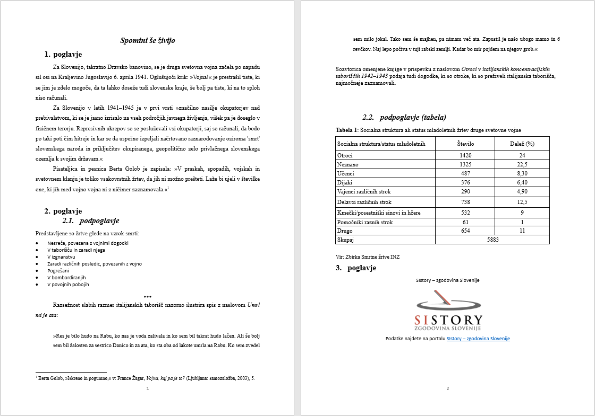

Kot pri vseh vrstah besedil ima proza prav tako svojo strukturo in določen pomen. Smernice TEI nimajo posebaj posvečenega modula za prozo.
primer teksta v .docx
Osnovni strukturni elementi
Telo <body> proznega besedila je lahko le niz odstavkov ali pa so ti odstavki združeni v poglavja, razdelke, pododdelke itd. Vsak odstavek je označen z oznako <p>. Element <div> se uporablja za predstavitev katerega koli takega združevanja odstavkov. Osnovni elementi strukture proznega besedila so lahko še
<p> oz. paragraph označuje odstavke v prozi. Število odstavkov je odvisno od teksta samega. Odstavkov ne moremo gnezditi temveč so lahko na isti ravnini.
<p>Za Slovenijo, takratno Dravsko banovino, se je druga svetovna vojna začela po napadu sil osi na Kraljevino Jugoslavijo 6. aprila 1941. Oglušujoči
krik: »Vojna!« je prestrašil tiste, ki se jim je zdelo mogoče, da ta lahko doseže tudi slovenske kraje, še bolj pa tiste, ki na to sploh niso
računali.</p><p>Za Slovenijo v letih 1941–1945 je v prvi vrsti »značilno nasilje okupatorjev nad prebivalstvom, ki se je jasno izrisalo na vseh področjih javnega
življenja, višek pa je doseglo v fizičnem terorju. Represivnih ukrepov so se posluževali vsi okupatorji, saj so računali, da bodo po taki poti čim
hitreje in kar se da uspešno izpeljali načrtovano raznarodovanje oziroma 'smrt' slovenskega naroda in priključitev okupiranega, geopolitično zelo
privlačnega slovenskega ozemlja k svojim državam.</p><p>Pisateljica in pesnica Berta Golob je zapisala: »V praskah, spopadih, vojskah in svetovnem klanju je toliko vsakovrstnih žrtev, da jih ni možno
prešteti. Laže bi ujeli v številke one, ki jih med vojno vojna ni z ničimer zaznamovala.«<note place="foot" xml:id="ftn1" n="1">Berta Golob,
»Iskreno in pogumno,« v: France Žagar, <hi rend="italic">Vojna, kaj pa je to? </hi>(Ljubljana: samozaložba, 2003), 5.</note></p>
Obstajajo lahko konteksti, v katerih kodirnik ne želi uporabiti <p> za kodiranje enot besedil, ki so analogna odstavkom. Za kodiranje tako imenovanih "anonimnih blokov" besedila lahko uporabite element <ab>. Ta je lahko koristen za kodiranje katere koli enote besedila s strukturo, podobno odstavku, za katero ni definirana nobena druga bolj specifična ustrezna oznaka ali ki ji kodirnik ne želi dodati posebnega pomena.
<div> oz. division označuje razdelke znotraj besedila. Znotraj teh razdelkov je mogoče združiti več odstavkov <p>. Elementi <div> se lahko hierarhično ugnezdijo, znotraj elementa imamo lahko poljubno število elementov <div>. Za razlikovanje med razdelki lahko dodamo elementu tudi atribut @type, s katerim označimo poglavja, sekcije in podsekcije na način kot jih je oblikoval avtor. <div> lahko tudi dodajamo oštevilčenje z atributom @n, ki ga lahko uporabimo za prepis oštevilčenja v izvornem besedilu ali za obogatitev prepisa.
<body><!-- vsebina pred poglavjem --><div type="chapter" n="2"><head>2. Poglavje</head><div type="subchapter" n="2.1"><head>2.1. podpoglavje</head><p>Predstavljene so žrtve glede na vzrok smrti:</p><!-- ... --></div><div type="subchapter" n="2.2"><head>2.2. podpoglavje</head><p><!-- ... --></p></div></div><!-- vsebina za poglavjem --></body>
Pred razdelki <div> lahko postavimo <p>, medtem ko ti ne morejo slediti <div> oziroma se pojavljati med njimi.
<p>Za Slovenijo, takratno Dravsko banovino, se je druga svetovna vojna začela po napadu sil osi na Kraljevino Jugoslavijo 6. aprila 1941. Oglušujoči
krik: »Vojna!« je prestrašil tiste, ki se jim je zdelo mogoče, da ta lahko doseže tudi slovenske kraje, še bolj pa tiste, ki na to sploh niso
računali.</p><div>Za Slovenijo v letih 1941–1945 je v prvi vrsti »značilno nasilje okupatorjev nad prebivalstvom, ki se je jasno izrisalo na vseh področjih javnega
življenja, višek pa je doseglo v fizičnem terorju. Represivnih ukrepov so se posluževali vsi okupatorji, saj so računali, da bodo po taki poti čim
hitreje in kar se da uspešno izpeljali načrtovano raznarodovanje oziroma 'smrt' slovenskega naroda in priključitev okupiranega, geopolitično zelo
privlačnega slovenskega ozemlja k svojim državam.</div><!-- naslednji div -->
Naslove označimo z elementom <head>, ki je lahko na začetku katerega koli razdelka na kateri koli ravni. Tudi naslovom je mogoče dodati atribut @type z vrednostjo, ki ustreza izvornemu besedilu.
<head type="mainTitle">Spomini še živijo</head><div><head type="subTitle">1. poglavje</head><p>Za Slovenijo, takratno Dravsko banovino, se je druga svetovna vojna začela po napadu sil osi na Kraljevino Jugoslavijo 6. aprila 1941. Oglušujoči
krik: »Vojna!« je prestrašil tiste, ki se jim je zdelo mogoče, da ta lahko doseže tudi slovenske kraje, še bolj pa tiste, ki na to sploh niso
računali. </p><!-- ... --></div>
Element za označevanje seznama <list> se lahko uporablja za označevanje katerega koli seznama, ki vsebujejo enega ali več elementov <item>. Elementi seznama so lahko oblikovani na različne načine - lahko so oštevilčeni, označeni s črkami, pikami ali pa so neoznačeni. Oblikovanje je mogoče zapisati znotraj atributa @rend v elementu <list>
bulleted - za elemente, pred katerimi so točke oz. podobne oznake
numbered - za oštevilčene sezname
inline - za sezname znotraj teksta, v neprekinjeni prozi brez prelomov vrstice
simple - za sezname brez posebnih stilskih lastnosti in oblikovanja
<list type="bulleted"><!-- ... --><item>Nesreča, povezana z vojnimi dogodki</item><item>V taborišču in zaradi njega</item><item>V izgnanstvu</item><item>Zaradi različnih posledic, povezanih z vojno</item><item>Pogrešani</item><item>V bombardiranjih</item><item>V povojnih pobojih</item></list><!-- oštevilčen --><list type="numbered"><item>1. Nesreča, povezana z vojnimi dogodki</item><item>2. V taborišču in zaradi njega</item><!-- ... --></list>
Odvisno od projekta se številke v oštevilčenem seznamu lahko označijo z elementom <label> ali atributom @n. Tudi pri seznamih lahko imamo naslove <head>
<list type="numbered"><!-- oštevilčen @n z naslovom--><head>Predstavljene so žrtve glede na vzrok smrti:</head><item n="1">Nesreča, povezana z vojnimi dogodki</item><item n="2">V taborišču in zaradi njega</item><!-- ... --></list><!-- oštevilčen <label> z naslovom --><list type="numbered"><head>Predstavljene so žrtve glede na vzrok smrti:</head><label>1.</label><item>Nesreča, povezana z vojnimi dogodki</item><label>2.</label><item n="2">V taborišču in zaradi njega</item><!-- ... --></list>
Citati
Pomembno je ločiti med vsebino citata (kot so neposreden govor ali citati iz drugih virov) in načinom, kako je ta vsebina prikazana (npr. z narekovaji). Pogledali si bomo naslednje elemente:
<q> za besedilo, ločeno od ostalega besedila z narekovaji
<quote> za citate, fraze ali odlomke, ki jih avtor navaza iz drugih del.
<cit> za citate iz nekega drugega dokumenta, skupaj z biblografsko referenco na njegov vir.
Uporaba narekovajev v besedilu lahko označuje neposredni ali posredni govor, misel, strokovni izraz, žargon, besedne zveze ali besedilo, ki ga avtor pripiše nekomu drugemu. Način, kako obravnavati narekovaje v citiranem besedilu, določa uredniška politika.
Element <q> se lahko uporablja za označevanje vseh vrst citatov, kadar ni potrebna razločitev med različnimi vrstami. Od ostalega teksta se loči z narekovaji ali drugimi podobnimi oznakami.
<body><!-- primer <q> quoted za označevanje govora ali misli--><!-- ... --><p>Za Slovenijo, takratno Dravsko banovino, se je druga svetovna vojna začela po napadu sil osi na Kraljevino Jugoslavijo 6. aprila 1941. Oglušujoči
krik: <q>»Vojna!«</q> je prestrašil tiste, ki se jim je zdelo mogoče, da ta lahko doseže tudi slovenske kraje, še bolj pa tiste, ki na to sploh
niso računali.</p><p>Za Slovenijo v letih 1941–1945 je v prvi vrsti <q>»značilno nasilje okupatorjev nad prebivalstvom, ki se je jasno izrisalo na vseh področjih
javnega življenja, višek pa je doseglo v fizičnem terorju. Represivnih ukrepov so se posluževali vsi okupatorji, saj so računali, da bodo po
taki poti čim hitreje in kar se da uspešno izpeljali načrtovano raznarodovanje oziroma 'smrt' slovenskega naroda in priključitev
okupiranega, geopolitično zelo privlačnega slovenskega ozemlja k svojim državam.«</q></p><!-- ... --></body>
Element <said> je bolj ekspliciten, z njim lahko označujemo govor ali misli in omogoča jasno ločitev od drugega citiranega teksta. Pogosto ima element atributa @aloud in @direct. @aloud se lahko uporablja za informacijo, ali je citiran odlomek neposredni ali posredni govor (vsebina izgovorjena na glas ali ne), @direct pa se uporablja za informacijo, ali je bila vsebina podana neposredno ali posredno. Vrednosti obeh atributov so lahko "true", "false", "unknown" in "innaplicable".
<body><!-- primer <said> --><!-- ... --><p>Za Slovenijo, takratno Dravsko banovino, se je druga svetovna vojna začela po napadu sil osi na Kraljevino Jugoslavijo 6. aprila 1941. Oglušujoči
krik: <said direct="true" aloud="true">»Vojna!«</said> je prestrašil tiste, ki se jim je zdelo mogoče, da ta lahko doseže tudi slovenske kraje,
še bolj pa tiste, ki na to sploh niso računali.</p><p>Za Slovenijo v letih 1941–1945 je v prvi vrsti <said direct="true" aloud="false">»značilno nasilje okupatorjev nad prebivalstvom, ki se je jasno
izrisalo na vseh področjih javnega življenja, višek pa je doseglo v fizičnem terorju. Represivnih ukrepov so se posluževali vsi okupatorji,
saj so računali, da bodo po taki poti čim hitreje in kar se da uspešno izpeljali načrtovano raznarodovanje oziroma 'smrt' slovenskega naroda
in priključitev okupiranega, geopolitično zelo privlačnega slovenskega ozemlja k svojim državam.«</said></p><!-- ... --></body>
V primeru, da je besedilo dobesedno povzeto iz drugega vira - bodisi pisnega ali govorjenega - je primernejše uporabiti element <quote>. Uporablja se za odlomke iz drugih dokumentov, govorov, literarnih del ali drugih virov.
<body><!-- primer <quote> --><!-- ... --><p>Razsežnost slabih razmer italijanskih taborišč nazorno ilustrira spis z naslovom <hi rend="italic">Umrl mi je ata</hi>: <quote>»Res je bilo hudo
na Rabu, ko nas je voda zalivala in ko sem bil takrat hudo lačen. Ali še bolj sem bil žalosten za sestrico Danico in za ata, ko sta oba od
lakote umrla na Rabu. Ko sem zvedel sem milo jokal. Tako sem še majhen, pa nimam več ata. Zapustil je našo ubogo mamo in 6 revčkov. Naj lepo
počiva v tuji rabski zemlji. Kadar bo mir pojdem na njegov grob.«</quote></p><!-- ... --></body>
<cit> se uporablja za kompleksnejše citate, katerim želimo dodati bibliografske informacije, kot so avtor, naslov ali stran. Najpogosteje vsebuje elemente <quote>, <ref> in <bibl>.
<body><!-- primer <cit> z elementoma <quote> in <bibl> --><!-- ... --><p>Pisateljica in pesnica Berta Golob je zapisala: <cit><quote>»V praskah, spopadih, vojskah in svetovnem klanju je toliko vsakovrstnih žrtev, da jih ni možno prešteti. Laže bi ujeli v številke
one, ki jih med vojno vojna ni z ničimer zaznamovala.« <bibl>Berta Golob, »Iskreno in pogumno,« v: France Žagar, <hi rend="italic">Vojna, kaj pa je to?</hi> (Ljubljana: samozaložba, 2003), 5.</bibl></quote></cit></p><!-- ... --></body>
Kako obravnavamo posamezne narekovaje v citiranem besedilu je določeno z uredniško politiko.
Bibligrafske reference
Smernice TEI omogočajo označevanje bibliografskih informacij na več načinov. Uporaba določenih elementov je odvisna od zahtevanih podrobnosti bibliografskega opisa. Elementi, ki se uporabljajo za bibliografski opis so
za popolnoma strukturiran biblografski opis, v katerem so prisotne vse komponente opisa TEI datoteke
Bibliografski opisi so lahko združeni v elementu <listBibl>
Element <bibl>, uporabljen že v prejšnjem primeru, je najenostavnejša oblika kodiranja bibliografske reference. To je ohlapen bibliografski opis, ki je sestavljen iz nestrukturiranega navadnega besedila.
<body><!-- primer <bibl> --><!-- ... --><bibl>Berta Golob, »Iskreno in pogumno,« v: France Žagar, <hi rend="italic">Vojna, kaj pa je to?</hi> (Ljubljana: samozaložba, 2003), 5.</bibl><!-- ... --></body>
V primerih, ko želimo bibliografskim informacijam oziroma enotam dati več strukture in podrobnosti se uporabi element <biblStruct>. Namenjen je strukturiranemu opisu enega bibliografskega vira - na primer knjige, članka, poglavja, spletne strani. Njegova struktura omogoča hierarhično organiziranje podatkov kot so naslov, avtor, založnik, leto izdaje, kraj izdaje itd. Glavni elementi <biblStruct> so
vsebuje naslov za kakršno koli delo. z atributom @level označujemo biblografsko raven za naslov, pri kateremu gre za članek, knjigo, revijo, serijo ali neobjavljeno gradivo. Vrednosti atributa so
a (analytic) - označuje analitični naslov, ki se nanaša na posamezen del večje enote, npr. poglavje, članek ali pesem v zbirki.
m (monographic) - naslov se nanaša na monografijo, kot npr. knjiga ali druga publikacije, vključno z posameznimi zvezki znotraj zbirk.
j (journal) - označuje naslov katerekoli serijske ali periodične publikacije, npr. revija, časopis.
s (series) - označuje naslov na serijo sicer ločenih publikacij, npr. zbirka.
u (unpublished) - naslov označuje katerokoli neobjavljeno delo
običajno znotraj elementa <monogr> ali <series> in je namenjen predstavitvi izdajateljskih podatkov o bibliografskem viru. Vsebuje informacije kot so kraj izdaje, založnik, leto izdaje in druge podatke, ki se nanašajo na fizično ali digitalno izdajo dela. Podrejeni elementi v <imprint> so
je namenjen opisovanju serijskih publikacij. Vključuje podatke o revijah, letopisih, več delnih knjigah, zbirkah ali drugih periodičnih izdajah (ki vključujejo posamezne dele). Element <series> se vedno nanaša na predhodni element <monogr>.
<body><!-- ... --><biblStruct><monogr><author><persName><surname>Gašparič</surname><forename>Jure</forename></persName></author><title level="m">Državni zbor 1992-2012 : O slovenskem parlamentarizmu</title><imprint><publisher>Inštitut za novejšo zgodovino</publisher><pubPlace>Ljubljana</pubPlace></imprint></monogr><series><title>Razpoznavanja - Recognitiones</title><biblScope unit="issue">17</biblScope></series></biblStruct><!-- podrobnejši primer --><biblStruct><analytic><author><persName><surname>Čepič</surname><forename>Zdenko</forename></persName></author><title level="a">Jugoslovanska vojska in slovenska milica v vrtincu politike ob koncu osemdesetih let</title><idno type="hdl">http://hdl.handle.net/11686/37948</idno></analytic><monogr><title level="m">Prikrita modra mreža: organi za notranje zadeve Republike Slovenije v projektu MSNZ leta 1990</title><idno type="hdl">http://hdl.handle.net/11686/37943</idno><imprint><publisher>Zveza policijskih veteranskih društev Sever</publisher><publisher>Inštitut za novejšo zgodovino</publisher><pubPlace>Ljubljana</pubPlace><date when="2010"/></imprint><biblScope unit="page" from="44" to="76"/></monogr><ref mimeType="application/pdf">https://www.sistory.si/cdn/publikacije/37001-38000/37943/Prikrita_modra_mreza.pdf#page=45</ref></biblStruct><!-- ... --></body>
Za združevanje bibliografskih citatov katere koli vrste smernice TEI ponujajo element <listBibl>.
<back><!-- ... --><listBibl><biblStruct><monogr><author><persName><surname>Gašparič</surname><forename>Jure</forename></persName></author><title level="m">Državni zbor 1992-2012 : O slovenskem parlamentarizmu</title><imprint><publisher>Inštitut za novejšo zgodovino</publisher><pubPlace>Ljubljana</pubPlace></imprint></monogr><series><title>Razpoznavanja - Recognitiones</title><biblScope unit="issue">17</biblScope></series></biblStruct><!-- naslednji biblStruct --></listBibl><!-- ... --></back>
Prelomi strani v digitalnih besedilih, ki temeljijo na tiskanih ali rokopisnih virih, so kodirani z elementom <pb>. Ta element, ki označuje začetek nove strani in s tem tudi mejo med eno stranjo besedila in drugo, je prazen. Prazen element se označi s poševnico (/) na koncu elementa (<pb/>).[Stran]Lahko vsebuje atribut @n za oštevilčenje strani.
<body><!-- primer preloma strani <pb/> --><!-- ... --><p>Razsežnost slabih razmer italijanskih taborišč nazorno ilustrira spis z naslovom <hi rend="italic">Umrl mi je ata</hi>: <quote>»Res je bilo
hudo na Rabu, ko nas je voda zalivala in ko sem bil takrat hudo lačen. Ali še bolj sem bil žalosten za sestrico Danico in za ata, ko sta
oba od lakote umrla na Rabu. Ko sem zvedel<pb n="2"/> sem milo jokal. Tako sem še majhen, pa nimam več ata. Zapustil je našo ubogo mamo
in 6 revčkov. Naj lepo počiva v tuji rabski zemlji. Kadar bo mir pojdem na njegov grob.«</quote></p><!-- ... --></body>
Element <seg> se po presoji urejevalca uporablja za označevanje katerega koli poljubljenega segmenta znotraj besedila. Uporabimo ga, ko želimo določene dele besedila označiti za boljšo semantično razločitev. <seg> pomaga strukturirati besedilo na način, ki omogoča boljše razumevanje in nadaljno obdelavo podatkov. Najpogosteje ima atribut @type.
<body><!-- več primerov segmentov <seg> z atributom @type --><!-- ... --><p>Za Slovenijo, takratno Dravsko banovino, se je druga svetovna vojna začela po napadu sil osi na Kraljevino Jugoslavijo <seg type="date">6.
aprila 1941</seg>. Oglušujoči krik: <seg type="quote">»Vojna!«</seg> je prestrašil tiste, ki se jim je zdelo mogoče, da ta lahko doseže
tudi slovenske kraje, še bolj pa tiste, ki na to sploh niso računali.</p><p>Za Slovenijo v letih <seg type="date">1941–1945</seg> je v prvi vrsti <seg type="quote">»značilno nasilje okupatorjev nad prebivalstvom, ki
se je jasno izrisalo na vseh področjih javnega življenja, višek pa je doseglo v fizičnem terorju. Represivnih ukrepov so se posluževali
vsi okupatorji, saj so računali, da bodo po taki poti čim hitreje in kar se da uspešno izpeljali načrtovano raznarodovanje oziroma
'smrt' slovenskega naroda in priključitev okupiranega, geopolitično zelo privlačnega slovenskega ozemlja k svojim državam.«</seg></p><!-- ... --></body>
<body><!-- primer označevanje tabele --><!-- ... --><table><head>Tabela 1: Socialna struktura ali status mladoletnih žrtev druge svetovne vojne</head><row><cell>Socialna struktura/status mladoletnih</cell><cell>Število</cell><cell>Delež (%)</cell></row><row><cell>Otroci</cell><cell>1420</cell><cell>24</cell></row><row><cell>Neznano</cell><cell>1325</cell><cell>22,5</cell></row><row><cell>Učenci</cell><cell>487</cell><cell>8,30</cell></row><row><cell>Dijaki</cell><cell>376</cell><cell>6,40</cell></row><!-- .... --><row><cell>Skupaj</cell><cell>5883</cell><cell>100</cell></row><bibl>Vir: Zbirka Smrtne žrtve INZ</bibl></table><!-- ... --></body>
Za označevanje vizualnih ali grafičnih predstavitev, kot so slike, ilustracije, diagrami, grafikoni itd. se uporablja <figure>. Same slike so označene z elementom <graphic> katerega atribut @url poda lokacijo slike. <figure> lahko združuje več med seboj povezanih informacij.
<body><!-- primer označevanje slik --><figure><head>SIstory – zgodovina Slovenije</head><graphic url="media/image1.png"><desc>logo</desc></graphic><figDesc>Podatke najdete na portalu <ref target="http://www.sistory.si">SIstory – zgodovina Slovenije</ref></figDesc></figure><!-- ... --></body>